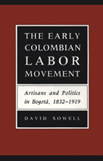

<body bgcolor="#FFFFFF" text="#000000" link="#0000FF" vlink="#CC0000" alink="#CC0000"><center><hr width="350" size="1" align="center" noshade>A unique history of political activity by nineteenth-century Colombian artisans<hr width="350" size="1" align="center" noshade><p><a href="https://cdcshoppingcart.uchicago.edu/Cart/ChicagoBook.aspx?ISBN=9780877229650&&PRESS=temple" target="_top">Buy this book!</a> | <a href="https://cdcshoppingcart.uchicago.edu/Cart/Cart.aspx?PRESS=temple" target="_top">View Cart</a> | <a href="https://cdcshoppingcart.uchicago.edu/Cart/Cart.aspx?PRESS=temple" target="_top">Check Out</a></p><p></p></center><!--none//--><h1>The Early Colombian Labor Movement</h1>
<H2>Artisans and Politics in Bogota, 1832-1919</H2>
<h3>David Sowell</h3>
<P>cloth 0-87722-965-1 $77.50, Oct 92, <FONT COLOR=#990033>Out of Print</FONT>
<br>Electronic Book 1-43990-541-X $77.50 <FONT COLOR=#990033>Out of Print</FONT>
<BR> 272 pp
6x9
</P><BLOCKQUOTE><I>"This important study is...a major contribution to Latin American labor historiography, which has focused not on 19th-century artisans but on industrial workers in the 20th century."</I>
<br>&#151<b>Charles Bergquist</b>, University of Washington-Seattle<I></I></BLOCKQUOTE>
<p>David Sowell traces the history of artisan labor organizations in Bogotá and examines long-term political activity of Colombian artisans in the century after independence. Relying on contemporary newspapers, political handouts, broadsides, and public petitions, Sowell analyzes the economic, social, and political history of the capital's artisan class, a middling social sector with very significant social and political strengths. This is the first study in English of nineteenth-century Latin American artisans and one of the few treatments that spans the whole of nineteenth-century Colombian history.
<p>The rise and late decline of artisan class political activity coincided the Colombia's integration into the world market. Initially petitioning for tariff protection, Bogotá's craftsmen in time mobilized to address numerous issues, including industrial education, internal trade order, credit, and better health and educational facilities. Sowell traces the transformation of Colombia's economy and the (mainly negative) effects its evolution had on bogotano artisans. By the end of the nineteenth century, the artisans class was fragmented, their labor leadership replaced by workers associated with industrial production, transportation systems, and the production of coffee.
<BR>&nbsp;<h2>Contents</h2><P>
<p>Preface
<br>Acknowledgments
<br>1. Artisan Socioeconomic Experiences
<br>2. Colombian Political Culture
<br>3. Artisan Mobilizations in the Era of Liberal Reforms
<br>4. Artisan Republicanism
<br>5. Mutual Aid, Public Violence, and the Regeneration
<br>6. The Emergence of the Modern Labor Movement
<br>7. Socioeconomic Change, Partisan Politics, and Artisan Organizations
<br>Notes
<br>Glossary
<br>Bibliography
<br>Index
</P><BR>&nbsp;<H2>About the Author(s)</H2>
<P><b>David Sowell</b> is Assistant Professor of History at Juniata College.</P>
<BR><H2>Subject Categories</H2>
<p><A HREF="/tempress/latin.html" TARGET="_top">Latin American/Caribbean Studies</a>
<BR><A HREF="/tempress/labor.html" TARGET="_top">Labor Studies and Work</a>
</p>
<p align="center"><a href="https://cdcshoppingcart.uchicago.edu/Cart/ChicagoBook.aspx?ISBN=9780877229650&&PRESS=temple" target="_top">Buy this book!</a> | <a href="https://cdcshoppingcart.uchicago.edu/Cart/Cart.aspx?PRESS=temple" target="_top">View Cart</a> | <a href="https://cdcshoppingcart.uchicago.edu/Cart/Cart.aspx?PRESS=temple" target="_top">Check Out</a></p><p><font face="Arial" size="1"><a href="copyright.html" onMouseOver="window.status='Web Copyright Policy';return true;" onMouseOut="window.status=''" title="Web Copyright Policy">&copy;</a> 2015 <a href="http://www.temple.edu" target="new" onMouseOver="window.status='Link to Temple University home page';return true;" onMouseOut="window.status=''" title="Link to Temple University home page">Temple University</a>. All Rights Reserved. http://www.temple.edu/tempress/titles/905_reg.html</font></p>